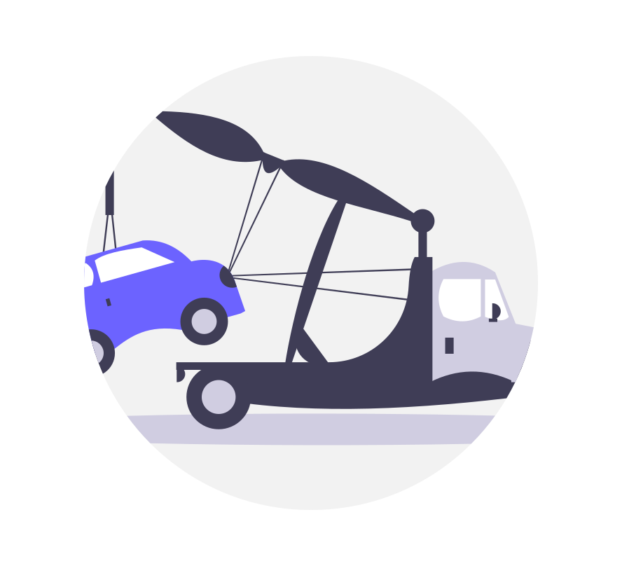

<ion-header [translucent]="true" class="ion-no-border">
  <ion-toolbar color="dark">
    <ion-title>Uber</ion-title>
    
  </ion-toolbar>
</ion-header>

<ion-content [fullscreen]="true" class="not-found-page">
  <div class="content-wrapper">
    
    <h2>Página No Encontrada</h2>
    <p>Lo sentimos, la página que buscas no existe.</p>
    <ion-button color="primary" expand="block" routerLink="/home">
      Volver al Inicio
    </ion-button>
  </div>
</ion-content>

<ion-footer>
  <ion-toolbar color="dark">
  </ion-toolbar>
</ion-footer>